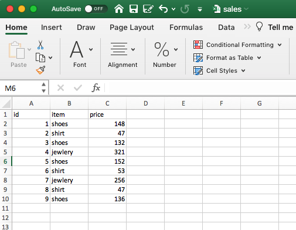

Module axn.ml.discrete
Discretizer Module

To make ml models more powerful on continuous data VL uses discretization (also known as binning). We discretize the feature and one-hot encode the transformed data. Note that if the bins are not reasonably wide, there would appear to be a substantially increased risk of overfitting, so the discretizer parameters should usually be tuned under cross validation. After discretization, linear regression and decision tree make exactly the same prediction. As features are constant within each bin, any model must predict the same value for all points within a bin. Compared with the result before discretization, linear model become much more flexible while decision tree gets much less flexible. Note that binning features generally has no beneficial effect for tree-based models, as these models can learn to split up the data anywhere.
Bin continuous data into intervals.
Parameters
file_in:file- raw csv file input to be discretize
file_out:file- output file of discretize process where continous data in transformed into bins used for models
drop_column:string- drop column from discreteize process
dicretize:string- discretization strategy - uniform, quantile analyst_supervised kmeans
ignore:string- columns of data to NOT be encoded or discretized
n_bins:intorarray-like, shape (n_features,) (default=5)- The number of bins to produce. Raises ValueError if
n_bins < 2. encode:{'onehot', 'onehot-dense', 'ordinal'}, (default='onehot')-
Method used to encode the transformed result.
onehot Encode the transformed result with one-hot encoding and return a sparse matrix. Ignored features are always stacked to the right. onehot-dense Encode the transformed result with one-hot encoding and return a dense array. Ignored features are always stacked to the right. ordinal Return the bin identifier encoded as an integer value.
strategy:{'uniform', 'quantile', 'kmeans'}, (default='quantile')-
Strategy used to define the widths of the bins.
uniform All bins in each feature have identical widths. quantile All bins in each feature have the same number of points. kmeans Values in each bin have the same nearest center of a 1D k-means cluster.
n_bins_:int array, shape (n_features,)- Number of bins per feature. Bins whose width are too small (i.e., <= 1e-8) are removed with a warning.
bin_edges_:arrayofarrays, shape (n_features, )- The edges of each bin. Contain arrays of varying shapes
(n_bins_, )Ignored features will have empty arrays.
Sometimes it may be useful to convert the data back into the original
feature space. The inverse_transform function converts the binned
data into the original feature space. Each value will be equal to the mean
of the two bin edges.
DBSCAN - Density-Based Spatial Clustering of Applications with Noise. Finds core samples of high density and expands clusters from them. Good for data which contains clusters of similar density.
The maximum distance between two samples for one to be considered as in the neighborhood of the other. This is not a maximum bound on the distances of points within a cluster. This is the most important
eps: Two points are considered neighbors if the distance between the two points is below the threshold epsilon. min_samples: The minimum number of neighbors a given point should have in order to be classified as a core point. It’s important to note that the point itself is included in the minimum number of samples. metric: The metric to use when calculating distance between instances in a feature array (i.e. euclidean distance).
The algorithm works by computing the distance between every point and all other points. We then place the points into one of three categories.
Core point: A point with at least min_samples points whose distance with respect to the point is below the threshold defined by epsilon.
Border point: A point that isn’t in close proximity to at least min_samples points but is close enough to one or more core point. Border points are included in the cluster of the closest core point.
Noise point: Points that aren’t close enough to core points to be considered border points. Noise points are ignored. That is to say, they aren’t part of any cluster.
Returns:
csv file output with continous data inn bins.
Example 1. CSV Files:
python -m discrete
–file_in csvs/sales.csv
–file_out_ohe csvs/sales_dis.csv
–ignore id
–ignore item
Example 1 - Data Input CSV File:

Example 1 - One Hot Encoded CSV File:

Expand source code
"""
Discretizer Module
<img src="images/dis.png" alt="DIS">
To make ml models more powerful on continuous data
VL uses discretization (also known as binning).
We discretize the feature and one-hot encode the transformed data.
Note that if the bins are not reasonably wide,
there would appear to be a substantially increased risk of overfitting,
so the discretizer parameters should usually be tuned under cross validation.
After discretization, linear regression and decision tree make exactly the same prediction.
As features are constant within each bin, any model must
predict the same value for all points within a bin.
Compared with the result before discretization,
linear model become much more flexible while decision tree gets much less flexible.
Note that binning features generally has no
beneficial effect for tree-based models,
as these models can learn to split up the data anywhere.
Bin continuous data into intervals.
Parameters
----------
file_in : file
raw csv file input to be discretize
file_out : file
output file of discretize process where continous data in transformed into bins used for models
drop_column : string
drop column from discreteize process
dicretize : string
discretization strategy - uniform, quantile analyst_supervised kmeans
ignore : string
columns of data to NOT be encoded or discretized
n_bins : int or array-like, shape (n_features,) (default=5)
The number of bins to produce. Raises ValueError if ``n_bins < 2``.
encode : {'onehot', 'onehot-dense', 'ordinal'}, (default='onehot')
Method used to encode the transformed result.
onehot
Encode the transformed result with one-hot encoding
and return a sparse matrix. Ignored features are always
stacked to the right.
onehot-dense
Encode the transformed result with one-hot encoding
and return a dense array. Ignored features are always
stacked to the right.
ordinal
Return the bin identifier encoded as an integer value.
strategy : {'uniform', 'quantile', 'kmeans'}, (default='quantile')
Strategy used to define the widths of the bins.
uniform
All bins in each feature have identical widths.
quantile
All bins in each feature have the same number of points.
kmeans
Values in each bin have the same nearest center of a 1D k-means
cluster.
n_bins_ : int array, shape (n_features,)
Number of bins per feature. Bins whose width are too small
(i.e., <= 1e-8) are removed with a warning.
bin_edges_ : array of arrays, shape (n_features, )
The edges of each bin. Contain arrays of varying shapes ``(n_bins_, )``
Ignored features will have empty arrays.
Sometimes it may be useful to convert the data back into the original
feature space. The ``inverse_transform`` function converts the binned
data into the original feature space. Each value will be equal to the mean
of the two bin edges.
DBSCAN - Density-Based Spatial Clustering of Applications with Noise.
Finds core samples of high density and expands clusters from them.
Good for data which contains clusters of similar density.
The maximum distance between two samples for one to be considered as in the neighborhood of the other.
This is not a maximum bound on the distances of points within a cluster. This is the most important
eps: Two points are considered neighbors if the distance between the two points is below the threshold epsilon.
min_samples: The minimum number of neighbors a given point should have in order to be classified as a core point.
It’s important to note that the point itself is included in the minimum number of samples.
metric: The metric to use when calculating distance between instances in a feature array (i.e. euclidean distance).
The algorithm works by computing the distance between every point and all other points.
We then place the points into one of three categories.
Core point: A point with at least min_samples points whose distance
with respect to the point is below the threshold defined by epsilon.
Border point: A point that isn’t in close proximity to at least min_samples points but is close enough to one or more core point.
Border points are included in the cluster of the closest core point.
Noise point: Points that aren’t close enough to core points to be considered border points. Noise points are ignored.
That is to say, they aren’t part of any cluster.
Returns:
----------
csv file output with continous data inn bins.
Example 1. CSV Files:
---------------------
python -m discrete \
--file_in csvs/sales.csv \
--file_out_ohe csvs/sales_dis.csv \
--ignore id
--ignore item
Example 1 - Data Input CSV File:
----------------------------
<img src="images/sales.png" alt="OHE" width="600" height="300">
Example 1 - One Hot Encoded CSV File:
-----------------------------
<img src="images/sales_dis.png" alt="OHE" width="600" height="300">
"""
# pylint: disable=invalid-name
# pylint: disable=too-many-locals
# pylint: disable=too-many-statements
# pylint: disable=import-error
import argparse
import pandas as pd
from axn.ml.discrete.discretizer import DiscretizerBuilder
description = \
"""
VoterLabs Inc. Data Discretizer
READ FILE_IN_RAW.CSV
GET COLUMN HEADERS
FOR EACH COLUMN NOT IN IGNORE LIST :
GET ALL CATEGORIES = UNIQUE COLUMN VALUES
GENERATE ONE HOT ENCODING HEADER
ENCODE EACH ROW WITH 1 or 0 FOR EACH HEADER
Standardization discretization and one hot encoding is an important requirement for VL machine learning estimators.
VL models WILL behave badly if the individual features do not look like standard normally distributed data:
that is, Gaussian with zero mean and unit variance. VL ignored the distribution and just transforms the data
to center it by removing the mean value of each feature, then scale it by dividing non-constant features by their standard deviation.
This is done by transforming conntious data into bins or one hot encoding
""".strip()
def parse_command_line():
"""
reads command line and sets up program parameters
"""
parser = argparse.ArgumentParser(description=description)
parser.add_argument(
'--file_in',
help='raw csv file input to be discretized')
parser.add_argument('--file_out_ohe', help='file intermediate .')
parser.add_argument('--file_out_discrete', help='file intermediate')
parser.add_argument('--file_out_ohe_dis', help='file intermediate')
parser.add_argument(
'--drop_column',
action='append',
help='drop column from discreteize process - BUT not from encoding or prediction')
parser.add_argument(
'--ignore',
action='append',
help='columns of data to NOT be encoded or discretized ')
parser.add_argument(
'--file_out',
help='output file of discretize process where continous data in transformed into bins used for models ')
parser.add_argument(
'--dicretize',
nargs='+',
action='append',
help='discretization strategy - uniform, quantile analyst_supervised kmeans')
args = parser.parse_args()
return args
def main():
"""
Step 1
----------
READ FILE_IN_RAW.CSV
Step 2
----------
GET COLUMN HEADERS
Step 3
----------
FOR EACH COLUMN NOT IN IGNORE LIST
Step 4
----------
GET ALL CATEGORIES = UNIQUE COLUMN VALUES
Step 5
----------
GET COLUMN HEADERS
Step 6
----------
DISCRTTIZE EACH ROW INTO BIN
"""
######################################################################
#
# read run commands
#
# pylint: disable=too-many-locals
# pylint: disable=too-many-locals
# pylint: disable=unused-variable
args = parse_command_line()
file_in_name = args.file_in
file_out_discrete = args.file_out_discrete
file_out = args.file_out
ignore = args.ignore
file_out_ohe_dis = args.file_out_ohe_dis
vl_dicretize_list_many = args.dicretize
######################################################################
#
# Discretize
#
print("Discretize --- START ")
drop_column = args.drop_column
file_in_name_org = file_in_name
file_in_name_drop = file_in_name
dropname = "_drop.csv"
file_in_name_drop = file_in_name.replace(".csv", dropname)
dfd = pd.read_csv(file_in_name_org).fillna(value=0)
dfd2 = dfd.drop(drop_column, axis=1)
dfd2.to_csv(file_in_name_drop, index=False)
file_in_name = file_in_name_drop
file_out_org = file_out
data_frame_all_len = pd.read_csv(file_in_name_drop).fillna(value=0)
mycol = data_frame_all_len.columns
my_len = len(data_frame_all_len)
i = 0
for vl_dicretize_list_one in vl_dicretize_list_many:
discretizer_builder = DiscretizerBuilder(file_in_name)
discretizer_builder.discretize(vl_dicretize_list_one)
discretizer = discretizer_builder.build()
discretizer.discretize()
new_end = str(i) + ".csv"
new_file = file_out_discrete.replace(".csv", new_end)
drop = discretizer.write_discretize_csv(new_file)
print("drop " + str(drop))
discrete_out_df = pd.read_csv(new_file)
ohe_out_df = pd.read_csv(file_in_name)
df_dis_ohe_result = discrete_out_df.join(ohe_out_df)
dl = [drop]
dll = df_dis_ohe_result.drop(dl, axis=1)
new_end_out = str(i) + ".csv"
new_file_out = file_out.replace(".csv", new_end_out)
dll.to_csv(new_file_out, index=False)
file_in_name = new_file_out
i = i + 1
dll2 = dll[:my_len]
dll2.to_csv(file_out_org, index=False)
print("Discretize --- END ")Sub-modules
axn.ml.discrete.binize-
To make ml models more powerful on continuous data VL uses discretization (also known as binning). We discretize the feature and one-hot encode the …
axn.ml.discrete.binize_kmeans-
To make ml models more powerful on continuous data VL uses discretization (also known as binning). We discretize the feature and one-hot encode the …
axn.ml.discrete.config-
reads config yaml file into config dictionary data object to drive the scikit learn machine learning algorithm
axn.ml.discrete.discretizer-
Encode categorical features as a one-hot numeric array …
axn.ml.discrete.generate_timeseries-
To make ml models more powerful on continuous data VL uses discretization (also known as binning). We discretize the feature and one-hot encode the …
axn.ml.discrete.vl_kmeans_kmedian-
K_Means Clustering is an unsupervised machine learning method that segments similar data points into groups …
Functions
def main()-
Step 1
READ FILE_IN_RAW.CSVStep 2
GET COLUMN HEADERSStep 3
FOR EACH COLUMN NOT IN IGNORE LISTStep 4
GET ALL CATEGORIES = UNIQUE COLUMN VALUESStep 5
GET COLUMN HEADERSStep 6
DISCRTTIZE EACH ROW INTO BINExpand source code
def main(): """ Step 1 ---------- READ FILE_IN_RAW.CSV Step 2 ---------- GET COLUMN HEADERS Step 3 ---------- FOR EACH COLUMN NOT IN IGNORE LIST Step 4 ---------- GET ALL CATEGORIES = UNIQUE COLUMN VALUES Step 5 ---------- GET COLUMN HEADERS Step 6 ---------- DISCRTTIZE EACH ROW INTO BIN """ ###################################################################### # # read run commands # # pylint: disable=too-many-locals # pylint: disable=too-many-locals # pylint: disable=unused-variable args = parse_command_line() file_in_name = args.file_in file_out_discrete = args.file_out_discrete file_out = args.file_out ignore = args.ignore file_out_ohe_dis = args.file_out_ohe_dis vl_dicretize_list_many = args.dicretize ###################################################################### # # Discretize # print("Discretize --- START ") drop_column = args.drop_column file_in_name_org = file_in_name file_in_name_drop = file_in_name dropname = "_drop.csv" file_in_name_drop = file_in_name.replace(".csv", dropname) dfd = pd.read_csv(file_in_name_org).fillna(value=0) dfd2 = dfd.drop(drop_column, axis=1) dfd2.to_csv(file_in_name_drop, index=False) file_in_name = file_in_name_drop file_out_org = file_out data_frame_all_len = pd.read_csv(file_in_name_drop).fillna(value=0) mycol = data_frame_all_len.columns my_len = len(data_frame_all_len) i = 0 for vl_dicretize_list_one in vl_dicretize_list_many: discretizer_builder = DiscretizerBuilder(file_in_name) discretizer_builder.discretize(vl_dicretize_list_one) discretizer = discretizer_builder.build() discretizer.discretize() new_end = str(i) + ".csv" new_file = file_out_discrete.replace(".csv", new_end) drop = discretizer.write_discretize_csv(new_file) print("drop " + str(drop)) discrete_out_df = pd.read_csv(new_file) ohe_out_df = pd.read_csv(file_in_name) df_dis_ohe_result = discrete_out_df.join(ohe_out_df) dl = [drop] dll = df_dis_ohe_result.drop(dl, axis=1) new_end_out = str(i) + ".csv" new_file_out = file_out.replace(".csv", new_end_out) dll.to_csv(new_file_out, index=False) file_in_name = new_file_out i = i + 1 dll2 = dll[:my_len] dll2.to_csv(file_out_org, index=False) print("Discretize --- END ") def parse_command_line()-
reads command line and sets up program parameters
Expand source code
def parse_command_line(): """ reads command line and sets up program parameters """ parser = argparse.ArgumentParser(description=description) parser.add_argument( '--file_in', help='raw csv file input to be discretized') parser.add_argument('--file_out_ohe', help='file intermediate .') parser.add_argument('--file_out_discrete', help='file intermediate') parser.add_argument('--file_out_ohe_dis', help='file intermediate') parser.add_argument( '--drop_column', action='append', help='drop column from discreteize process - BUT not from encoding or prediction') parser.add_argument( '--ignore', action='append', help='columns of data to NOT be encoded or discretized ') parser.add_argument( '--file_out', help='output file of discretize process where continous data in transformed into bins used for models ') parser.add_argument( '--dicretize', nargs='+', action='append', help='discretization strategy - uniform, quantile analyst_supervised kmeans') args = parser.parse_args() return args